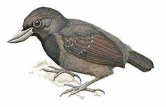
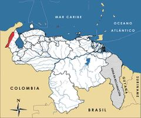

Clytoctantes alixii
| Hormiguero pico de hoz | |
|---|---|
|  | |
| Riesgo de extinción | |
 En peligro (UICN) | |
| Clasificación científica | |
| Reino: | Animalia |
| Filo: | Chordata |
| Clase: | Aves |
| Orden: | Passeriformes |
| Familia: | Formicariidae |
| Género: | Clytoctantes |
| Especie: | Clytoctantes alixii |
| Nombre binomial | |
|
Clytoctantes alixii Elliot, 1870 | |
| Distribución | |
|
 Mapa de distribución de Clytoctantes alixii | |
Contenido
Información de Evaluación
- Categoría y Criterio Regional: En Peligro C2a(ii)
- Fecha de Evaluación Regional: 2015
- Evaluadores: Jesús Morales-Campos y Ariany García-Rawlins
- Categoría y Criterio Global: En Peligro B1ab(i,ii,iii); D
Justificación
Evaluaciones Previas
1999: En Peligro (EN)
2008: En Peligro (EN)
Información General
Nombres comunes
Hormiguero pico de hoz, batará piquicurvo, Recurve-billed Bushbird.
Notas taxonómicas
Sinónimos
Descripción
Se trata de un hormiguerito que mide 16 cm de longitud, miembro de un género muy diferenciable de otros congéneres y que incluye pocas especies. Se caracteriza por su pico negro, fino, comprimido y extremadamente curvo. Es de color gris pizarra negro, y en la garganta, pecho, alas y cola, es más negro (Phelps Jr. y Meyer de Schauensee 1979, Hilty y Brown 1986, Restall et al. 2007, Zimmer, K. et al. 2015).
Distribución
Su distribución conocida está limitada a pocas y aisladas localidades en Colombia y Venezuela. En el país vecino se encuentra al norte, en el oeste, centro y este de los Andes en Puerto Valdivia, serranía de San Lucas y César, y el río Samaná. En nuestro país habita en el extremo noroeste, en específico en el valle de río Negro en la sierra de Perijá (Phelps Jr. y Meyer de Schauensee 1979, Hilty y Brown 1986, Collar et al. 1992, Hilty 2003). Está asociada a selvas pluviales muy densas y a arbustos en los bordes de bosques entre 180 y 1000 m de altitud. Aunque Clytoctantes alixii fue descrita con base en unos especímenes supuestamente colectados en Ecuador, no existe evidencia satisfactoria de la presencia de esta ave en dicho país (Collar et al. 1992). Los ejemplares «ecuatorianos» del «Río Napo» (holotipos descritos en 1870 por Daniel Giraud Elliot) son pieles comerciales de «Bogotá» (Sharpe 2013).
- Sistema: Terrestre
- Bioregión:
- Intervalo altitudinal (m): 180-100
- Endémica: No
Situación
Se desconoce su situación con precisión. En Venezuela no se cuenta con suficiente información que permita deducir el tamaño poblacional de C. alixii, aunque se considera que es una pequeña fracción del estimado global calculado en menos de 1000 individuos (BirdLife International 2015). Desde 1965 no existían registros, hasta que en el año 2004 fue observada en Venezuela, en bosques secundarios de la serranía de Lajas, en la sierra de Perijá (Sharpe 2013). Se cree que podría ser más abundante de lo estimado, y que los pocos registros se deben a lo inaccesible de su hábitat y al comportamiento esquivo del ave (Hilty y Brown 1986, Collar et al. 1992, Renjifo et al. 2002, IUCN 2014, Zimmer, K. et al. 2015). En el ámbito mundial está considerada En Peligro y con prioridad de acción urgente, clasificación que se aplica también en Colombia (BirdLife International 2000, Renjifo et al. 2002, IUCN 2014).
- EOO (km2): 82800
- AOO (km2): Temporalmente sin información
- Tendencia Poblacional: Decreciendo
Amenazas
Se conoce con certeza que una gran proporción de los ambientes utilizados por Clytoctantes alixii han sido objeto de fuertes perturbaciones y se encuentran deforestados o muy intervenidos. Sin embargo, no se sabe cómo dichas actividades la afectarían, ya que es posible que su ecología esté vinculada a la existencia de ecotonos. En Colombia se estima que ha perdido 50% de su distribución en los últimos diez años. Las áreas protegidas donde está presente no poseen planes de control y vigilancia adecuados para frenar las prácticas agrícolas que en ellas ocurren. La intervención o transformación de los hábitats primarios quizás no represente una amenaza principal, ya que observaciones recientes sugieren que la especie es capaz de adaptarse a ambientes secundarios (Zimmer, K. et al. 2015). No obstante, esta amenaza no debe ser minimizada porque la sierra de Perijá está señalada como un área muy impactada por la presencia de cultivos ilícitos, por la colonización no controlada, la ganadería y la minería asociada a la extracción de carbón, cobre, calizas, arcillas, fosfatos y barita. También se ha reportado que dichas actividades están siendo facilitadas por la construcción de carreteras, en especial en el lado colombiano. Algunas áreas de la región, como el Cerro Tetari, permanecen en buen estado de conservación y con sus ecosistemas originales casi intactos. En casos como el de Cerro Pintado, solo se cuenta con remanentes de bosques en las laderas de la montaña (Lentino et al. 2005).
Conservación
El parque nacional Sierra de Perijá protege la mayor parte de las localidades conocidas de la especie en Venezuela, mientras que en Colombia está presente en al menos dos áreas protegidas (Renjifo et al. 2002), y en algunas reservas privadas. La sierra de Perijá está calificada entre los ambientes más amenazados del norte de los Andes. Su hábitat es parte de dos Áreas de Importancia para la Conservación de las Aves, entre las cuales el parque nacional Sierra de Perijá está considerado como la superficie de Venezuela con mayor número de especies vulnerables (Lentino et al. 2005) y una de las prioridades más altas para la conservación de las aves en el país (Rodríguez, J. P. et al. 2004b). Se impone realizar investigaciones de campo, empezando por las localidades donde fue colectada en el pasado, y verificar si su distribución se corresponde con el parque nacional. Es necesario determinar sus requerimientos de hábitat, en particular su capacidad de persistir en vegetación secundaria alejada de bosque primario. Con base en los resultados obtenidos, se recomienda evaluar la necesidad de extender la superficie del parque hasta que abarque una proporción mayoritaria de su distribución en el país. Su estudio podría desarrollarse de forma simultánea con los de otras especies amenazadas en la zona (Rodríguez, J. P. y Rojas-Suárez 2003). También sería en particular importante mejorar el manejo y lograr la efectiva protección del parque nacional Sierra de Perijá, además de su ampliación hacia el lado colombiano (Lentino et al. 2005).
Autorías
Autores originales
Christopher J. Sharpe y Miguel Lentino
Colaboradores
Ilustrador
Robin Restall
Referencias
- BirdLife International (2000). Threatened Birds of the World. The official source for birds on the IUCN Red List. Lynx Edicions. Barcelona, España. 864 pp.
- BirdLife International. (2015). IUCN Red List for birds. Disponible en www.birdlife.org, consultada el 08/07/2015.
- Collar, N. J., Gonzaga, L. P., Krabbe, K., Nieto, A. M., Naranjo, L. G., Parker III, T. A. y Wege, D. C. (1992). Threatened Birds of the Americas. The ICBP/IUCN Red Data Book (3rd ed. part 2). International Council for Bird Preservation. Cambridge. 1150 pp.
- Hilty, S. L. (2003). Birds of Venezuela, second edition. Princeton University Press. Princeton, NJ, USA. 878 pp.
- Hilty, S. L. y Brown, W. L. (1986). A Guide to the Birds of Colombia. Princeton University Press. 836 pp.
- IUCN (2014). The IUCN Red List of Threatened Species. Version 2014.3. Accesible en www.iucnredlist.org.
- Lentino, M., Esclasans, D. y Medina, F. (2005). Áreas importantes para la conservación de las aves en Venezuela. Páginas: 621-730. En: BirdLife International y Conservation International (Eds.). Áreas importantes para la Conservación de las aves en los Andes tropicales: sitios prioritarios para la conservación de la biodiversidad. BirdLife International (Serie de conservación de BirdLife No. 14) & Soc. Audubon de Venezuela, Caracas. Quito, Ecuador.
- Phelps Jr., W. H. y Meyer de Schauensee, R. (1979). Una guía de las Aves de Venezuela. Gráficas Armitano. Caracas. 484 pp.
- Renjifo, L. M., Franco-Maya, A. M., Amaya-Espinel, J. D., Kattan, G. H. y López-Lanús, B. (2002). Libro Rojo de Aves de Colombia. Instituto Alexander von Humboldt, Ministerio del Medio Ambiente. Bogotá, Colombia.
- Restall, R., Rodner, C. y Lentino, M. (2007). Birds of Northern South America, an Identification Guide. Volume 1: Species Accounts. Volume 2: Plates and Maps. Yale University Press. New Haven, USA and London, UK. 880 pp.
- Rodríguez, J. P. y Rojas-Suárez, F. (1999). Libro Rojo de la Fauna Venezolana, segunda edición. PROVITA, Fundación Polar. Caracas. 444 pp.
- Rodríguez, J. P. y Rojas-Suárez, F. (2003). Libro Rojo de la Fauna Venezolana (2a ed. reim.). Provita, Fundación Polar. Caracas. 472 pp.
- Rodríguez, J. P. y Rojas-Suárez, F. (Eds.) (2008). Libro Rojo de la Fauna Venezolana, tercera edición. Provita y Shell Venezuela, S. A. Caracas, Venezuela. 364 pp.
- Rodríguez, J. P., Rojas-Suárez, F. y Sharpe, C. J. (2004b). Setting priorities for the conservation of Venezuela's threatened birds. Oryx 38(4): 373-382.
- Sharpe, C. J. (2013). Re-finding the Recurve-billed Bushbird Clytoctantes alixii. The Curious Naturalist. Disponible en thecuriousnaturalist.blogspot.com/2013/08/recurve-billed-bushbird-clytoctantes.html, consultada el 08/07/2015.
- Sharpe, C. J. y Lentino, M. (2015). Hormiguero pico de hoz, Clytoctantes alixii. En: J.P. Rodríguez, A. García-Rawlins y F. Rojas-Suárez (eds.) Libro Rojo de la Fauna Venezolana. Cuarta edición. Provita y Fundación Empresas Polar, Caracas, Venezuela. Recuperado de: animalesamenazados.provita.org.ve/content/hormiguero-pico-de-hoz Jue, 12/04/2018 - 08:51
- Zimmer, K., Isler, M. L. y Sharpe, C. J. (2015). Recurve-billed Bushbird (Clytoctantes alixii). En: del Hoyo, J., Elliott, A., Sargatal, J., Christie, D. A. y de Juana, E. (Eds.). Handbook of the Birds of the World Alive. Lynx Edicions. Barcelona. (Descargado de www.hbw.com/node/56691, el 08/07/2015).